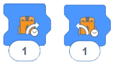

En esta actividad, los estudiantes exploran nuevos bloques dentro de la aplicación EdBlocks y se les asigna la tarea de programar Edison para que realice dos giros diferentes controlados por tiempo.
Esta actividad refuerza el concepto de que todo lo que programe para que haga Edison requiere tanto una acción
como una duración.
Además, alienta a los estudiantes a experimentar con los bloques de tiempo introducidos por el usuario como un
medio para programar Edison para que lleve a cabo tareas.
• Recuerde a los estudiantes cómo descargar un programa y recordar escuchar el sonido de éxito antes de desconectar el cable EdComm.
• Hay varios bloques diferentes de 'giro' en EdBlocks.
Para esta actividad, asegúrese de que los estudiantes seleccionen los bloques de giro que están controlados
por tiempo:

• Recuerde a los estudiantes que pueden cambiar la hora haciendo clic en el número y escribiendo el tiempo deseado, desde 0.01 hasta 320. El tiempo es en segundos.
1. Revise los decimales, especialmente las decenas y las centenas.
2. Explore cómo se muestra la geometría en esta actividad, especialmente cómo los ángulos actúan como medidas de giro.
Tenga en cuenta: diferentes robots Edison viajarán a velocidades ligeramente diferentes, lo que puede hacer que
los estudiantes obtengan resultados ligeramente diferentes. Las respuestas asumen que la hoja de actividades
está impresa en papel A4.
- (Giro de 90 grados) Aproximadamente 0,35 segundos.
- (Giro de 180 grados) Aproximadamente 0,7 segundos.